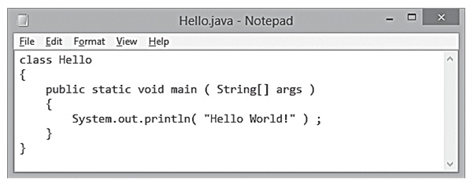

JAVA PROGRAMMING
java is a popular programming language
Java is used to develop mobile apps, web apps, desktop apps, games and much more.

OOPs (Object-Oriented Programming System)
Object means a real-world entity such as a pen, chair, table, computer, watch, etc.Object-Oriented Programming is a methodology or paradigm to design a program using classes and objects.
It simplifies software development and maintenance by providing some concepts:
* Object
* Class
* Inheritance
* Polymorphism
* Abstraction
* Encapsulation
Advance Java
It is a part of Java programming language. It is an advanced technology or advance version of Java specially designed to develop web-based, network-centric or enterprise applications.
It includes the concepts like Servlet, JSP, JDBC, RMI, Socket programming, etc. It is a specialization in specific domain.
Most of the applications developed using advance Java uses tow-tier architecture i.e. Client and Server.
All the applications that runs on Server can be considered as advance Java applications.
Majorly there are three most important concepts in advanced Java and they are :
*JSP (Java server pages)
*JDBC (Java DataBase Connectivity)
*Java servlets